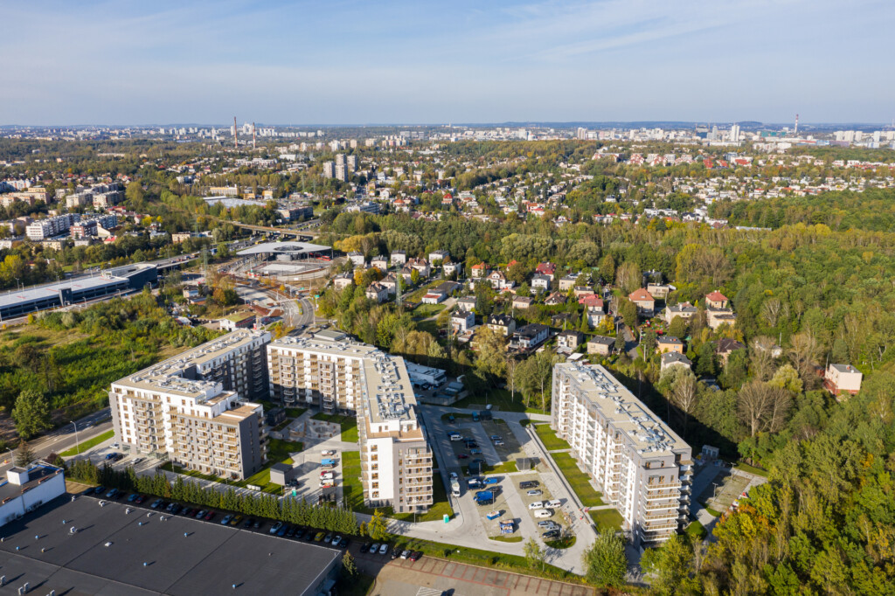

Brynów

Brynów to dzielnica miasta Katowice, położona w południowo-zachodniej części miasta, blisko centrum.
Wyróżnia się tym, że składa się zasadniczo z dwóch części administracyjnych:Brynów‑Osiedle Zgrzebnioka (część wschodnia) – mieszkalna, spokojna z przewagą zabudowy jednorodzinnej i terenów zielonych.
Załęska Hałda‑Brynów (część zachodnia) – nieco bardziej zróżnicowana pod względem zabudowy, z elementami przemysłowymi historycznie.
W Brynowie znajduje się jedno z największych terenów zielonych Katowic — Park im. Tadeusza Kościuszki, który staje się swoistą „zieloną płucą” dzielnicy.
Dzielnica jest bardzo dobrze skomunikowana — m.in. przez nowoczesne centrum przesiadkowe Centrum Przesiadkowe Brynów, które ułatwia podróże komunikacją miejską, z możliwością „Park & Ride”.
Brynów ma historię przemysłową – część zachodnia dzielnicy (Załęska Hałda-Brynów) była związana z kopalnią KWK Wujek i funkcjami przemysłowymi.
W części Brynowa-Osiedle Zgrzebnioka dominuje zabudowa jednorodzinna i jest to uznawane za jedną z bardziej prestiżowych części Katowic – spokojna, zielona i dobrze skomunikowana.
Zalety:
Zielone otoczenie i dostęp do terenów rekreacyjnych – dobra opcja dla osób ceniących spokój i naturę.
Bliskość centrum Katowic, a jednocześnie bardziej kameralna atmosfera niż najbardziej centralne dzielnice.
Silna komunikacja – możliwość szybkiego dojazdu do różnych części miasta.
Kwestie do uwzględnienia:
Ze względu na historyczne elementy przemysłowe w niektórych częściach (szczególnie Załęska Hałda-Brynów) może być większy ruch komunikacyjny lub zabudowa mniej „kameralna” niż w części jednorodzinnej.
Przy wyborze mieszkania/domu warto zwrócić uwagę na konkretną lokalizację – np. czy jest blisko głównych ulic/trasy komunikacyjnej – bo to może wpływać na komfort (hałas, ruch)
Brynów to bardzo ciekawa dzielnica Katowic, oferująca dobrą równowagę między dostępem do miejskiej infrastruktury a spokojniejszym, bardziej zielonym otoczeniem. Jeśli szukasz miejsca, które jest blisko centrum, ale nie w „samym środku zgiełku”, Brynów może być bardzo dobrym wyborem.